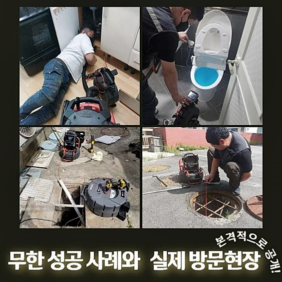
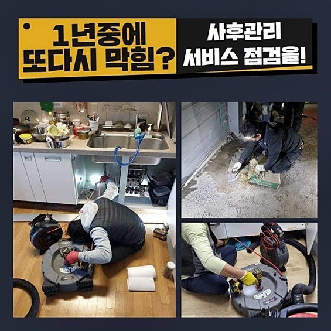
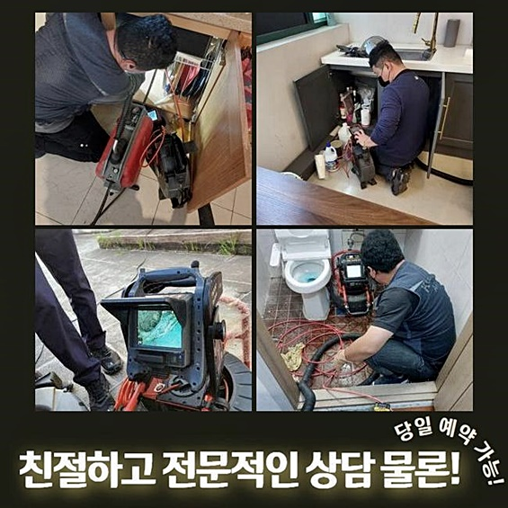
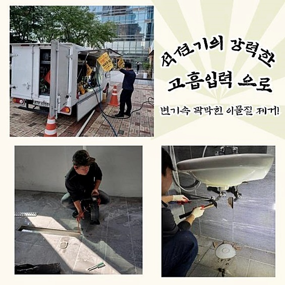
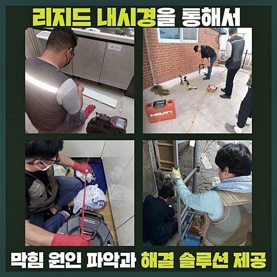
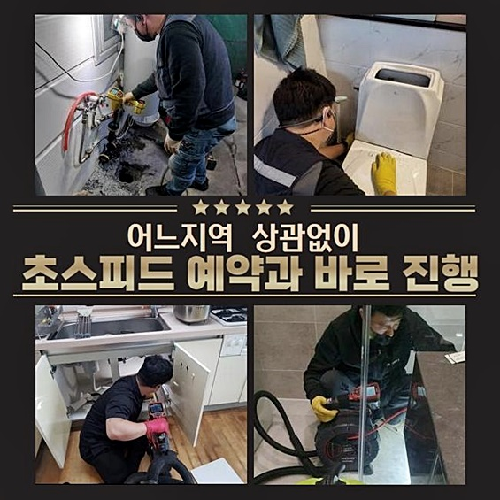

🏠 이천 관고동화장실하수구막힘 신둔면 설비하는곳
용인 싱크대막힘 전문 시공 후기

📋 작업 개요
- 위치: 용인
- 서비스 유형: 싱크대막힘, 하수구막힘, 배관막힘, 역류해결, 뚫는업체, 배관청소, 고압세척
- 작업 일시: 2024. 6. 5. 16:45
- 업체명: 하수구수사대 (010-5615-2118)
🔍 문제 상황
이천 관고동화장실하수구막힘 신둔면 설비하는곳
이전에 예기치못하게 배관에 시스템적 오류가 있다거나 골치아픈 일인 배관장애 현상들이 불거지는바람에 전문가를 모색해봐야하는 상태일경우 고객분들이면 방치마시고 차근차근 전반적인 작업의 사항들을 확인해보세요
문의를 하시고 전문가들이 찾아뵙고 일단 집안측의 하수구 등에 문제가 발발한 탓에 시정해야되는 부분을 내시경기기로 체크한 뒤 어떠한 절차를 통해 해결까지 닿는지 전문진에게 들으셔야 합니다
배수관에 결함지점을 점검하고 세척을 맡기실건지 뚫는방법을 안쓰고 방임하실것인지 고객분들께서 선택하시면 된답니다
증세가 발현되면 일단 고객님이 셀프조치를 수행하는게 대부분이에요
알맞는 조치를 제대로 진행되지 못하면 반복하여 같은 증상들이 야기되는걸 사실들도 알고계셔야해요
생활 중에 배관에서 하수가 기능을 못하는게 보일 시에 신속히 전문업체와 해결방안을 강구해보세요!
고객분의 하수시스템 오류의 문의들을 받아 내방했습니다
화장실의 시설과 주방도 온전하게 쓸 수 없는 상황이라 불편을 호소하셨습니다
배수관이 균열되어서 막히는 사태가 벌어지면 하수구를 점검한 뒤 수리합니다
대부분 배관장애은 배수구 내측으로 누적되기 쉬운 이물이 흐르며 쌓이게되면 출수구까지 빠지지못하고 쌓이면서 문제들이 발현되게 되요

🔎 원인 분석
💡 전문가 진단: 정밀 진단 장비를 사용하여 슬러지의 고착 여부를 판명하고 타격/세척 작업을 실시했습니다.
증세들이 걷잡을 수 없게되어 대처가 동반되어야하는 때 전문진의 역량들도 그렇지만 또 중요시하게 해야하는것은 장비들을 갖췄냐는 것입니다
여기저기 둘러보니 내측의 하수관로가 수직배관 끝머리의 배수로와 접촉된걸 체크할 수 있었습니다
우선 배수오류이 심해진 곳이라고 일러주신 세면대시설의 배관을 살핀 뒤자 심부에 이르기까지 내시경기기를 투입해주고 어째서 증세가 발생되었나 자세한 검수를 실시해줍니다
내시경으로 진단을 거쳤더니 중간중간 통수진행을 불능상태로 만드는 고착물이 누적되어서 역류되어버리는 문제들이 연출된걸 쉽게 알게 되었어요
구간마다 누적된 잔여물들을 사라지게끔 바깥부분으로 배출해주어 청소가 될 수 있게 잔해물 청소에 탁월한 석션장치로 1차적인 세척을 진행했습니다
강력한 석션기기를 운용하므로 석션장비로 안쪽에 있는 이물을 빨아당깁니다
배수구 입구쪽에서는 밀착시켜 압박한 다음 뭉친 잔여물을 쉽지않았지만 외부로 빼내줬죠
화장실은 특히나 빠진 머리카락들이나 유분기가 있는 용품들 의도치않게 빠지는 것들까지 배수관 속에 쌓이게되면서 굳게되어 막혀버리게 해요
여러 증상들을 막고자하신다면 화장실내부에서 사용한 뒤 정리 시 육가타일도 확인하시고 머리카락 등을 치워주시면 되고 정리하셨다면 하수관으로 흘러가지 않도록 조심하게 정리하시면 되요
주기성을 갖고 하수관 관리책 실시도 해주어야 하죠
육가부품을 빼고 내부 마개쪽에 머리카락등이 자리하고 있어요

🔧 작업 과정
커다란 물건들 및 잔해물 유분성분으로 배수구자체가 오염되어있던 모습이였습니다
이곳을 세척하려면 앞서 사용된 석션장치를 사용하여 작업을 하지않습니다
타 전문장비를 운용하여 처리해주려고 했어요
이럴땐 하수관에 남겨진 잔해물과 머리카락등을 뺄 생각으로 샤프트장비를 운용합니다
플렉스 샤프트로 말씀드리면 드릴을 통하여 재빨리 돌며 신속하게 고착된 것을 청소하는 기능을 지니고있고 벽부분에 눌은 흡착물이 있으면 플렉스샤프트기를 운용하여 청결하게 해드리고 있답니다
해당 절차를 걸쳐 사슬부위에 파쇄된 고착물이 탈거될 시 제거시키며 석션장비도 투입시켜서 반복하여 청소해준답니다
싱크대와 욕실공간에 하수도와 이어진 곳도 청결하게 잔해물을 세척해주는 과정들도 물론 빠트리지않았죠
이게 끝이 아니라 재차 작업해야되는 부분이 있었는데요
개수대의 증상도 없앨 목적으로서 싱크대바닥 배관에서부터 뻗어있는 배관들의 청소가 실시되어야 했는데요
이 부분을 의뢰인에게 내시경기기로 오차없이 보실 수 있게끔 내시경장치를 사용해 보시게끔 했습니다
고객분께서는 재빨리 해결해줄것을 요청해주셨기에 하부장에 있던 주름호스를 배수라인에서 꺼내주었어요
배수통 하단에 관로에 슬러지까지 침전되면서 빠른 작업을 위해 해체를 해줬습니다
이 지점에서 진단하기위해서 안측의 모습들을 관찰해보니 다양한 이물이나 석회질들이 딱딱해져서 떨어지지 않는 모습을 확인했어요
쌓여버린 곳을 재빨리 제거하며 청결하게 변신하도록 만들어주었습니다
작업을 하다가 하얀색을 띄는 흡착물들이 딱딱하게 굳어서 남아있던 구간이 있길래 고객에게 저희전문가에게 의뢰하기에 앞서 사용한 조치가 있는지 여쭤보니 인터넷에서 클리너용액을 사신 뒤에 배수구로 부었다고 설명해주셨습니다
스스로의 힘으로 조치해보다가 자칫하여 손 쓰기 힘든 상태로 번질수도 있기때문에 전문가들의 분석이 필요해요
아래의 하수라인으로 장치를 투입시키고 세척하기위하여 작게 타공을하여 하단에 출수구까지 장치를 투입하여 수리를 시작합니다
작업을 해줄때에는 내시경장치로 해당 상황들을 확인하면서 수리를 해주고있으므로 염려될 사항은 없죠


✅ 작업 완료
수리를 해주며 탈락된 것은 마지막에 석션으로 수습해주면 이렇게나 깔끔하게 하수관을 목격하게 됩니다
배수가 현저하게 떨어졌더라도 문제에대해 우려할 일이 없어요!
심각한 사안들도 해결해들고 있기 때문에요!
타 업체에서 해결하지않은채 도중하차했던 적이 존재한다면 조속히 저희의 전문진들에게 연락주시기 바래요!
최선의 작업들을 진행하고.지원해드리고 막힘이 발생했을때 언제든지 부담없이 연락하시면 좋은 대응으로 설명드릴게요




⚠️ 주방 싱크대 배관 막힘 예방 수칙
- ✅ 기름기가 묻은 식기나 프라이팬은 설거지 전 키친타올로 반드시 기름때를 닦아내세요.
- ✅ 주기적으로 싱크대 개수대에 뜨거운 물을 가득 받아 한 번에 내려 배관 내부 기름을 씻어내세요.
- ✅ 배수구 거름망을 미세한 필터로 사용하시고 음식물 찌꺼기가 틈으로 새어 들지 않게 관리하세요.
- ✅ 베이킹소다와 식초를 뜨거운 물과 함께 일주일에 한 번씩 부어주면 배관 살균과 막힘 예방에 좋습니다.
💡 핵심 정리
- 확실한 장비 작업(내시경 점검 및 샤프트 스케일링)으로 원인을 뿌리 뽑습니다.
- 작업 후 1년 이내에 동일한 부위 재발 시 100% 무상 A/S 서비스를 보장합니다.
- 서울 · 경기 · 인천 전 지역에 24시간 언제든 긴급 출동할 수 있도록 항시 대기 중입니다.
❓ 자주 묻는 질문 (FAQ)
🚨 용인 싱크대막힘 문제로 고민이신가요?
정확한 원인 진단과 확실한 시공으로 재발 없는 해결을 약속드립니다.
24시간 긴급 출동 | 서울 · 경기 · 인천 전지역 | 1년 내 재발 시 무상 A/S